100 % gratuit
À essayer en premierLe secondaire en simulations interactives.
Maths, physique, chimie et biologie, de la 3e à la 6e secondaire (FWB) : pour chaque année, 10 chapitres avec leurs simulations, un rappel théorique animé et des exercices corrigés du ★ au ★★★★★.
651simulations
1615exercices et QCM
16années × matières
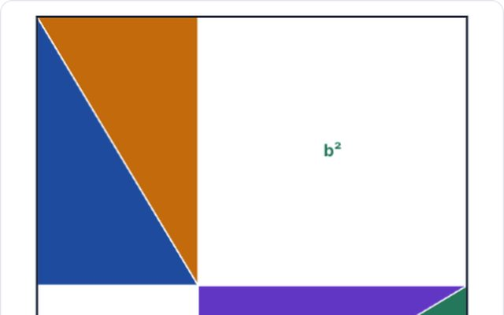
Mathématiques · 3eMathématiques4 cours
Mathématiques · 3e secondaireMathématiques · 3e40 simulations · 102 exercices — Calcul numérique et expressions algébriques · Fonctions : graphiques, tableaux et formules · Fonctions du premier degré · Équations du premier degré à une inconnue…
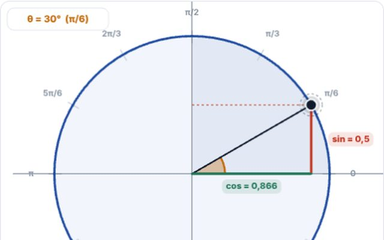
Mathématiques · 4e secondaireMathématiques · 4e49 simulations · 100 exercices — Fonctions de référence et transformations · Racines, radicaux et polynômes · La fonction du second degré · Équations du second degré…
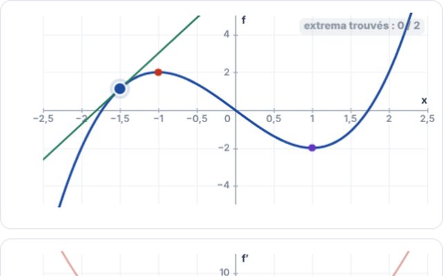
Mathématiques · 5e secondaireMathématiques · 5e40 simulations · 100 exercices — Fonctions : opérations, composition, réciproque · Suites arithmétiques et géométriques · Limites de fonctions · Asymptotes et continuité…
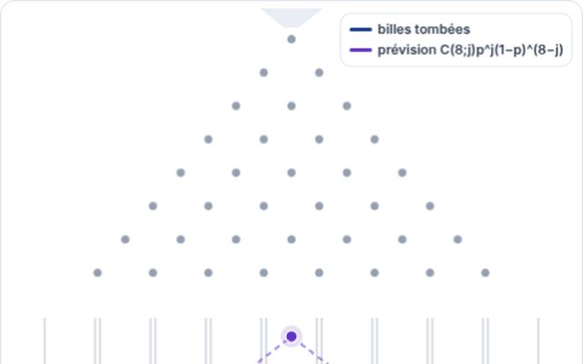
Mathématiques · 6e secondaireMathématiques · 6e40 simulations · 101 exercices — Exponentielles et logarithmes · Dérivation de e^x et ln x, étude de fonctions · Primitives · Intégrale définie, aires et volumes…
Physique4 cours
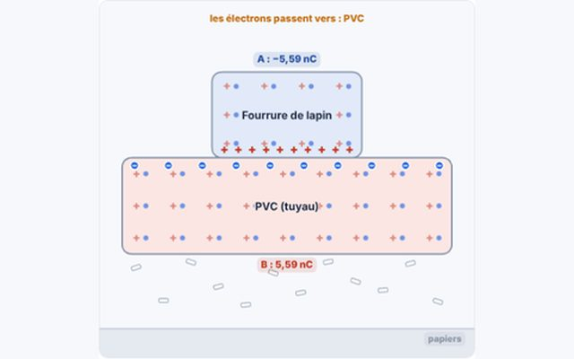
Physique · 3e secondairePhysique · 3e40 simulations · 100 exercices — Électrostatique : charges et interactions · Le circuit électrique et le courant · Intensité et tension : mesurer le courant · Résistance et loi d'Ohm…
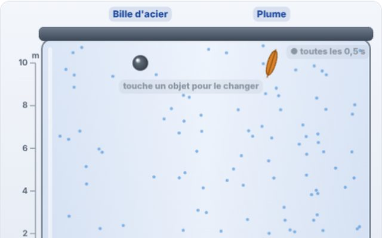
Physique · 4e secondairePhysique · 4e40 simulations · 100 exercices — Mouvement et vitesse · Accélération et MRUA · Chute libre et graphes du mouvement · Énergie cinétique et potentielle…
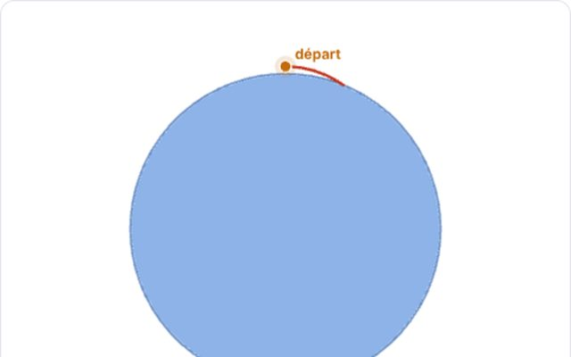
Physique · 5e secondairePhysique · 5e40 simulations · 101 exercices — Vecteurs, composition et décomposition des forces · Équilibre statique et première loi de Newton · Deuxième loi de Newton · Troisième loi de Newton et quantité de mouvement…
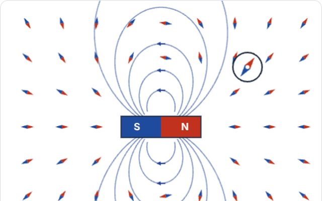
Physique · 6e secondairePhysique · 6e40 simulations · 100 exercices — Magnétisme et champ magnétique · Force de Lorentz et force de Laplace · Induction électromagnétique · Courant alternatif, transformateur et réseau…
Chimie4 cours
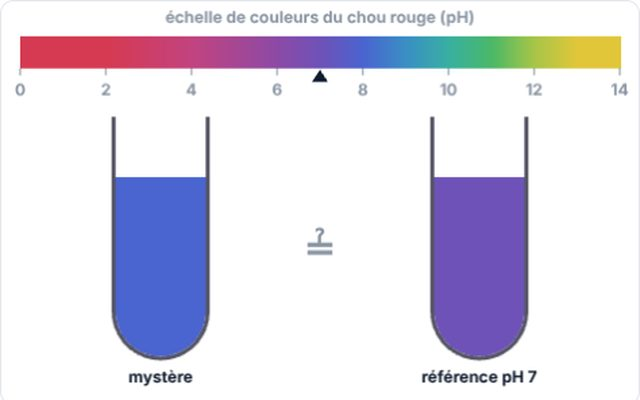
Chimie · 3e secondaireChimie · 3e40 simulations · 110 exercices — Mélanges, corps purs et techniques de séparation · Du modèle particulaire aux modèles de l'atome · Isotopes et masse atomique · Tableau périodique : métaux et non-métaux…
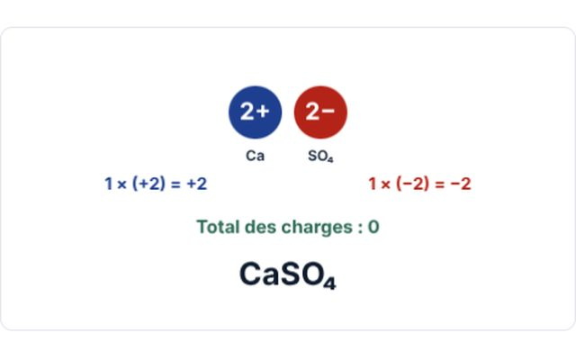
Chimie · 4e secondaireChimie · 4e40 simulations · 100 exercices — Nomenclature des substances inorganiques · La mole et le nombre d'Avogadro · Masse molaire et calculs de masse · Gaz : volume molaire et lois des gaz…
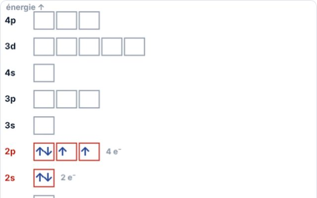
Chimie · 5e secondaireChimie · 5e40 simulations · 100 exercices — Structure électronique et schéma de Lewis · Liaisons covalente, ionique et métallique · Géométrie des molécules et solides cristallins · Eau, polarité, liaison hydrogène et solubilité…
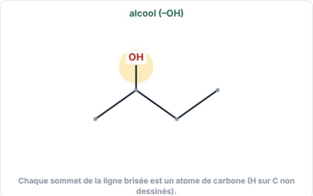
Chimie · 6e secondaireChimie · 6e41 simulations · 100 exercices — Alcools, aldéhydes, cétones et acides carboxyliques · Estérification, hydrolyse et saponification · Alcènes, polymères et plastiques · Acides et bases : couples, Ka et pH…
Biologie4 cours
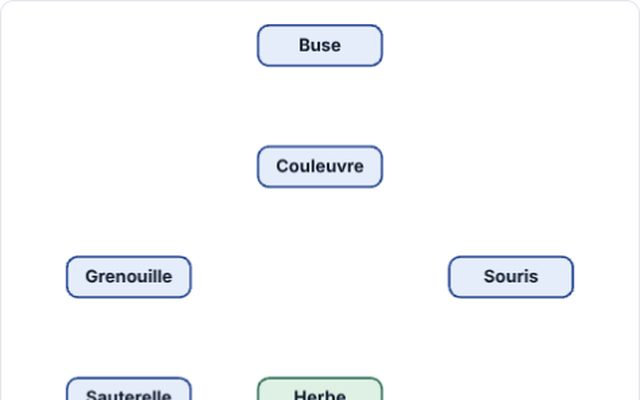
Biologie · 3e secondaireBiologie · 3e40 simulations · 100 exercices — Chaînes et réseaux trophiques · Flux d'énergie, pyramides et rendement · Appareil digestif et digestion · Absorption et transport des nutriments…
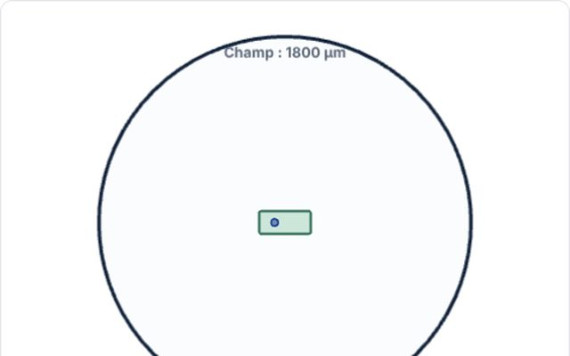
Biologie · 4e secondaireBiologie · 4e41 simulations · 100 exercices — Niveaux d'organisation et observation de la cellule · Organites et leurs fonctions · Membrane cellulaire, diffusion et osmose · Enzymes et catalyse biologique…
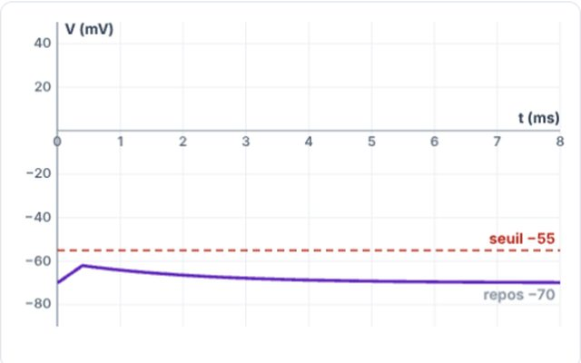
Biologie · 5e secondaireBiologie · 5e40 simulations · 101 exercices — Neurone, influx nerveux et système nerveux · Synapse, réflexe et intégration nerveuse · Hormones, rétrocontrôle et glycémie · Homéostasie et thermorégulation…
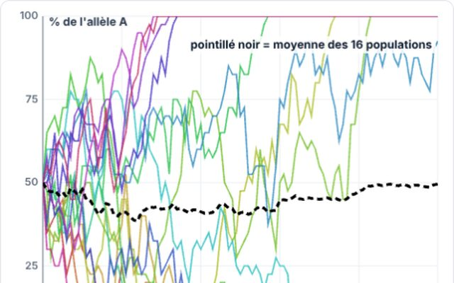
Biologie · 6e secondaireBiologie · 6e40 simulations · 100 exercices — Hérédité monohybride : gènes et allèles · Dihybridisme et indépendance des gènes · Hérédité liée au sexe et gènes liés · Génétique humaine, mutations et maladies génétiques…
Aucun cours ne correspond.